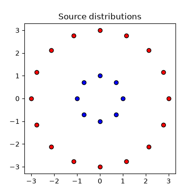
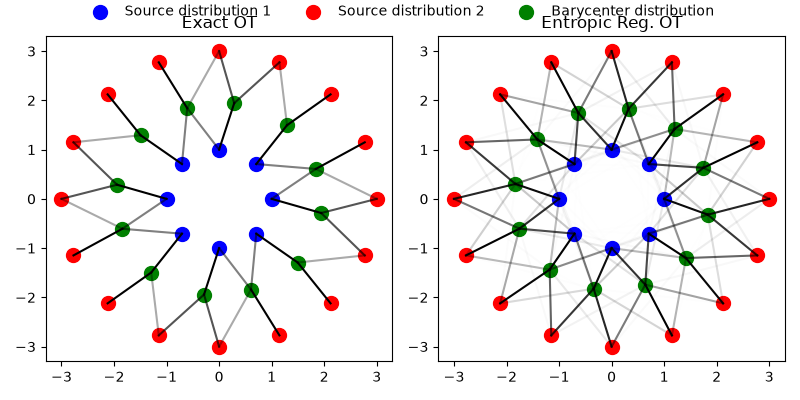
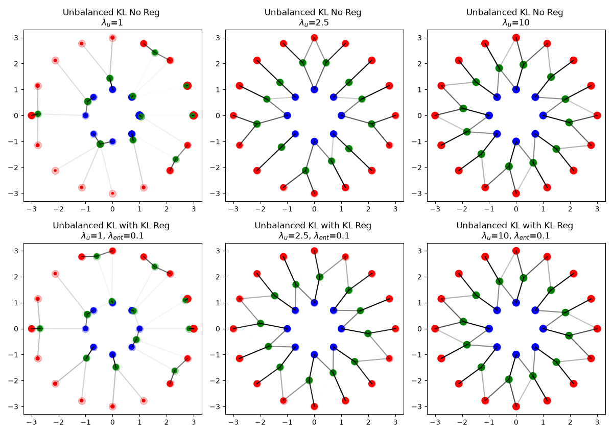

Note
Go to the end to download the full example code.
Optimal Transport Barycenter solvers comparison
This example illustrates solutions returned for different variants of exact, regularized and unbalanced OT barycenter problems with free support using our wrapper ot.solve_bary_sample.
# Author: Cédric Vincent-Cuaz <cedvincentcuaz@gmail.com>
#
# License: MIT License
# sphinx_gallery_thumbnail_number = 2
import numpy as np
import matplotlib.pylab as pl
import ot
from ot.plot import plot2D_samples_mat
2D data example
We first generate two sets of samples in 2D of 8 and 16 points uniformly separated on circles. The weights of the samples are uniform.
# Problem size
n1, n2 = 8, 16
nbary = 12
# Generate random data
np.random.seed(0)
r1, r2 = 1, 3
x1 = r1 * np.array(
[(np.cos(2 * i * np.pi / n1), np.sin(2 * i * np.pi / n1)) for i in range(n1)]
)
x2 = r2 * np.array(
[(np.cos(2 * i * np.pi / n2), np.sin(2 * i * np.pi / n2)) for i in range(n2)]
)
style = {"markeredgecolor": "k"}
pl.figure(1, (4, 4))
pl.plot(x1[:, 0], x1[:, 1], "ob", **style)
pl.plot(x2[:, 0], x2[:, 1], "or", **style)
pl.title("Source distributions")
pl.show()

Set up parameters for balanced OT barycenter solvers and solve
# balanced OT
lst_balanced_solvers = [ # name, param for ot.solve function
("Exact OT", dict()),
("Entropic Reg. OT", dict(reg=1.0)),
]
lst_balanced_res = []
for name, param in lst_balanced_solvers:
print(f"-- name = {name} / param = {param}")
res = ot.solve_bary_sample(X_a_list=[x1, x2], n=nbary, **param)
lst_balanced_res.append(res)
list_P = [res.list_res[k].plan for k in range(2)]
print("X:", res.X)
print("loss:", res.value)
print("loss:", res.log)
print(
"marginals OT 1:",
res.list_res[0].plan.sum(axis=1),
res.list_res[0].plan.sum(axis=0),
)
print(
"marginals OT 2:",
res.list_res[1].plan.sum(axis=1),
res.list_res[1].plan.sum(axis=0),
)
-- name = Exact OT / param = {}
/home/circleci/project/ot/solvers/_bary.py:162: RuntimeWarning: invalid value encountered in scalar divide
if abs(new_criterion - prev_criterion) / abs(prev_criterion) < tol_bary:
BCD converged in 4 iterations
X: [[ 1.84114117 0.60729556]
[ 0.28701257 1.94290965]
[ 1.49550334 -1.29255481]
[ 0.60729556 -1.84114117]
[-1.94290965 0.28701257]
[-0.60729556 1.84114117]
[ 1.29255481 1.49550334]
[-1.49550334 1.29255481]
[ 1.94290965 -0.28701257]
[-1.29255481 -1.49550334]
[-1.84114117 -0.60729556]
[-0.28701257 -1.94290965]]
loss: 1.1589629991802717
loss: {'stopping_criterion': [np.float64(3.5548104740331845), np.float64(1.2465846410185621), np.float64(1.1650649412388852), np.float64(1.1589629991802715), np.float64(1.1589629991802717)]}
marginals OT 1: [0.125 0.125 0.125 0.125 0.125 0.125 0.125 0.125] [0.08333333 0.08333333 0.08333333 0.08333333 0.08333333 0.08333333
0.08333333 0.08333333 0.08333333 0.08333333 0.08333333 0.08333333]
marginals OT 2: [0.0625 0.0625 0.0625 0.0625 0.0625 0.0625 0.0625 0.0625 0.0625 0.0625
0.0625 0.0625 0.0625 0.0625 0.0625 0.0625] [0.08333333 0.08333333 0.08333333 0.08333333 0.08333333 0.08333333
0.08333333 0.08333333 0.08333333 0.08333333 0.08333333 0.08333333]
-- name = Entropic Reg. OT / param = {'reg': 1.0}
BCD converged in 14 iterations
X: [[ 1.74513458 0.63006858]
[ 0.32292074 1.82909418]
[ 1.41519337 -1.20237787]
[ 0.64094898 -1.74169796]
[-1.83108912 0.30287904]
[-0.63325353 1.74362168]
[ 1.19878558 1.41897616]
[-1.41333452 1.20660735]
[ 1.82957495 -0.32101269]
[-1.17898838 -1.43635404]
[-1.75427084 -0.60505515]
[-0.34162181 -1.82474926]]
loss: 2.843917885588297
loss: {'stopping_criterion': [np.float64(4.936424991369895), np.float64(3.1120231938542977), np.float64(2.8852594148178747), np.float64(2.8529760102986677), np.float64(2.8490581667577874), np.float64(2.847220993521691), np.float64(2.84603194859164), np.float64(2.845232096852182), np.float64(2.844710356872045), np.float64(2.844382959911563), np.float64(2.844182839395289), np.float64(2.8440618969857256), np.float64(2.8439889115754537), np.float64(2.843944735280049), np.float64(2.843917885588297)]}
marginals OT 1: [0.125 0.125 0.125 0.125 0.125 0.125 0.125 0.125] [0.08333333 0.08333333 0.08333333 0.08333333 0.08333333 0.08333333
0.08333333 0.08333333 0.08333333 0.08333333 0.08333333 0.08333333]
marginals OT 2: [0.0625 0.0625 0.0625 0.0625 0.0625 0.0625 0.0625 0.0625 0.0625 0.0625
0.0625 0.0625 0.0625 0.0625 0.0625 0.0625] [0.08333333 0.08333333 0.08333333 0.08333333 0.08333333 0.08333333
0.08333333 0.08333333 0.08333333 0.08333333 0.08333333 0.08333333]
Plot distributions and plans for balanced OT barycenter solvers
def plot_list_res(
lst_res,
lst_solvers,
fig_num=1,
n_cols=2,
show_masses=False,
show_legend=True,
s=100,
fig_width=None,
fig_height=None,
):
n_plots = len(lst_res)
n_rows = int(np.ceil(n_plots / n_cols))
if fig_width is None:
fig_width = 8 * n_cols
if fig_height is None:
fig_height = 4 * n_rows
fig, axes = pl.subplots(
n_rows,
n_cols,
figsize=(fig_width, fig_height),
squeeze=False,
num=fig_num,
)
axes = axes.ravel()
legend_handles = None
for i, (name, param) in enumerate(lst_solvers):
ax = axes[i]
pl.sca(ax)
X = lst_res[i].X
list_P = [lst_res[i].list_res[k].plan for k in range(2)]
plot2D_samples_mat(x1, X, list_P[0])
plot2D_samples_mat(x2, X, list_P[1])
if show_masses:
# Marginals induced by transport plans
a1 = list_P[0].sum(axis=1) * list_P[0].shape[0]
a2 = list_P[1].sum(axis=1) * list_P[1].shape[0]
# weighted average barycenter masses
b = (
0.5
* (list_P[0].sum(axis=0) + list_P[1].sum(axis=0))
* list_P[0].shape[1]
)
# background uniform distribution
ax.scatter(x1[:, 0], x1[:, 1], s=s, color="blue", marker="o", alpha=0.25)
ax.scatter(x2[:, 0], x2[:, 1], s=s, color="red", marker="o", alpha=0.25)
ax.scatter(X[:, 0], X[:, 1], s=s, color="green", marker="o", alpha=0.25)
list_size_1 = s * a1
list_size_2 = s * a2
list_size_b = s * b
else:
list_size_1 = s
list_size_2 = s
list_size_b = s
if i == 0: # add labels
h1 = ax.scatter(
x1[:, 0],
x1[:, 1],
s=list_size_1,
color="blue",
marker="o",
alpha=1,
label="Source distribution 1",
)
h2 = ax.scatter(
x2[:, 0],
x2[:, 1],
s=list_size_2,
color="red",
marker="o",
alpha=1,
label="Source distribution 2",
)
h3 = ax.scatter(
X[:, 0],
X[:, 1],
s=list_size_b,
color="green",
marker="o",
alpha=1,
label="Barycenter distribution",
)
else:
h1 = ax.scatter(
x1[:, 0], x1[:, 1], s=list_size_1, color="blue", marker="o", alpha=1
)
h2 = ax.scatter(
x2[:, 0], x2[:, 1], s=list_size_2, color="red", marker="o", alpha=1
)
h3 = ax.scatter(
X[:, 0], X[:, 1], s=list_size_b, color="green", marker="o", alpha=1
)
if legend_handles is None:
legend_handles = [h1, h2, h3]
ax.set_title(name)
############################################################
# remove unused axes
for j in range(i + 1, len(axes)):
fig.delaxes(axes[j])
############################################################
# Single legend above all subplots
if show_legend:
labels = [h.get_label() for h in legend_handles]
fig.legend(
legend_handles,
labels,
loc="upper center",
bbox_to_anchor=(0.5, 1.02),
ncol=3,
frameon=False,
)
fig.tight_layout()
pl.show()
plot_list_res(
lst_balanced_res,
lst_balanced_solvers,
fig_num=2,
n_cols=2,
show_masses=False,
fig_width=8,
fig_height=4,
show_legend=True,
)

Set up parameters for unbalanced OT barycenter solvers and solve
lambda_unbalanced_vals = [1, 2.5, 10]
# unbalanced OT KL
lst_unbalanced_solvers = [
(
"Unbalanced KL No Reg \n" + r"$\lambda_u$=%s" % lambda_val,
dict(unbalanced=lambda_val),
)
for lambda_val in lambda_unbalanced_vals
] + [
(
"Unbalanced KL with KL Reg \n"
+ r"$\lambda_u$=%s, $\lambda_{ent}$=%s" % (lambda_val, 0.1),
dict(reg=0.1, unbalanced=lambda_val, unbalanced_type="kl", reg_type="kl"),
)
for lambda_val in lambda_unbalanced_vals
]
lst_unbalanced_res = []
for name, param in lst_unbalanced_solvers:
print(f"-- name = {name} / param = {param}")
res = ot.solve_bary_sample(X_a_list=[x1, x2], n=nbary, **param)
lst_unbalanced_res.append(res)
list_P = [res.list_res[k].plan for k in range(2)]
print("X:", res.X)
print("loss:", res.value)
print("loss:", res.log)
print(
"marginals OT 1:",
res.list_res[0].plan.sum(axis=1),
res.list_res[0].plan.sum(axis=0),
)
print(
"marginals OT 2:",
res.list_res[1].plan.sum(axis=1),
res.list_res[1].plan.sum(axis=0),
)
-- name = Unbalanced KL No Reg
$\lambda_u$=1 / param = {'unbalanced': 1}
BCD converged in 19 iterations
X: [[ 2.73309406e+00 1.13981794e+00]
[ 1.56554060e+00 2.42446865e+00]
[ 2.33584421e+00 -1.68611571e+00]
[ 1.04768727e+00 -3.09021185e-02]
[-9.21750458e-01 5.41230220e-01]
[-1.03655713e-01 1.43390903e+00]
[ 1.04768727e+00 -3.09021185e-02]
[ 7.46726238e-01 7.46726238e-01]
[ 2.95773740e+00 -7.24654594e-32]
[-4.56978745e-01 -1.10324492e+00]
[-2.76214828e+00 5.95794784e-02]
[ 7.57192081e-01 -9.41610048e-01]]
loss: 0.8156206216899978
loss: {'stopping_criterion': [np.float64(0.9793293190550253), np.float64(0.8543325708607069), np.float64(0.8288789083180792), np.float64(0.8219574448681899), np.float64(0.8195840664796413), np.float64(0.8182782311927407), np.float64(0.8174360620725586), np.float64(0.8168531793971974), np.float64(0.8163834905610549), np.float64(0.8161073710204839), np.float64(0.8159370905214629), np.float64(0.8158305469634906), np.float64(0.8157621733682839), np.float64(0.815716831647574), np.float64(0.8156857241679643), np.float64(0.8156637260950893), np.float64(0.8156477877700095), np.float64(0.8156360296708335), np.float64(0.8156272440107248), np.float64(0.8156206216899978)]}
marginals OT 1: [0.14488511 0.10386344 0.09239477 0.07553914 0.06029111 0.06466776
0.06466778 0.10057852] [0.00137193 0.00251392 0.00279821 0.07166427 0.12811452 0.09239477
0.07166427 0.09997758 0.00155657 0.12933554 0.00771573 0.09778032]
marginals OT 2: [0.07210436 0.07211275 0.04133113 0.04595124 0.01634922 0.01077561
0.01008633 0.01813995 0.05586022 0.01379789 0.00557438 0.0096174
0.00557438 0.01252993 0.04916616 0.03852079] [0.07211275 0.08440354 0.0837123 0.00198732 0.01008633 0.02712483
0.00198732 0.00287882 0.07210436 0.02076615 0.08779807 0.01252993]
-- name = Unbalanced KL No Reg
$\lambda_u$=2.5 / param = {'unbalanced': 2.5}
BCD converged in 147 iterations
X: [[ 1.75916227 0.63536543]
[-0.43128951 2.03199054]
[ 0.63260879 -1.75681055]
[ 1.27809612 -1.27809583]
[-1.75985069 0.62926878]
[-1.27447552 1.27447552]
[ 1.27805247 1.27805247]
[ 0.43128994 2.03198933]
[ 2.11695968 -0.32380378]
[-1.21870014 -1.21870014]
[-2.1250867 -0.3264692 ]
[-0.32519775 -2.12106236]]
loss: 1.012521956682006
loss: {'stopping_criterion': [np.float64(1.6543038457215027), np.float64(1.2766733820925698), np.float64(1.1549420397743804), np.float64(1.0796690008698673), np.float64(1.0614359605777381), np.float64(1.056644404426096), np.float64(1.052245676106074), np.float64(1.040404895228308), np.float64(1.0287085917097596), np.float64(1.0261257799524386), np.float64(1.0250441656840636), np.float64(1.0243949446135003), np.float64(1.0239017733211542), np.float64(1.0234337365554402), np.float64(1.0228101549007391), np.float64(1.0221295564725252), np.float64(1.0218482823756463), np.float64(1.0216894392513793), np.float64(1.0215872674950233), np.float64(1.0215162291422692), np.float64(1.0214598164442372), np.float64(1.0214079021469153), np.float64(1.0213551848472826), np.float64(1.021298749492615), np.float64(1.0212365746198167), np.float64(1.0211669704582198), np.float64(1.021088326102815), np.float64(1.0209989683363352), np.float64(1.0208970672363211), np.float64(1.0207805580976839), np.float64(1.020647062438803), np.float64(1.0204937952851503), np.float64(1.0203174452056738), np.float64(1.020114008411319), np.float64(1.0198785472083014), np.float64(1.0196049093456208), np.float64(1.0193242177414579), np.float64(1.0192093387140257), np.float64(1.0191630655023523), np.float64(1.01913712663923), np.float64(1.0191194406283075), np.float64(1.0191051109399434), np.float64(1.0190920219388155), np.float64(1.0190792378488969), np.float64(1.0190663317748392), np.float64(1.019053098367578), np.float64(1.0190394291197475), np.float64(1.0190252572592038), np.float64(1.0190105325423873), np.float64(1.018995208686241), np.float64(1.0189792355603693), np.float64(1.0189625520561378), np.float64(1.0189450766829553), np.float64(1.0189266926243918), np.float64(1.0189072227662967), np.float64(1.0188863891653384), np.float64(1.0188637533384182), np.float64(1.0188386418250182), np.float64(1.0188100736900307), np.float64(1.0187767123586748), np.float64(1.0187368358138469), np.float64(1.0186882719047394), np.float64(1.0186282748189233), np.float64(1.0185533637728519), np.float64(1.0184591311095532), np.float64(1.0183400130337417), np.float64(1.0181890176871877), np.float64(1.0179974092367328), np.float64(1.0177543511138627), np.float64(1.017446601957201), np.float64(1.017045967675591), np.float64(1.0164767583698064), np.float64(1.0158222230713658), np.float64(1.0156085289128036), np.float64(1.0154983154812163), np.float64(1.0154297384493223), np.float64(1.0153823501568355), np.float64(1.0153472490189512), np.float64(1.0153196253215053), np.float64(1.0152964443578698), np.float64(1.015275576616455), np.float64(1.015255397892461), np.float64(1.015234567963896), np.float64(1.015211888339991), np.float64(1.015186199021757), np.float64(1.0151562949124775), np.float64(1.0151208506442315), np.float64(1.0150783460328032), np.float64(1.0150269857195076), np.float64(1.0149646066888853), np.float64(1.014888566501431), np.float64(1.0147956031142111), np.float64(1.0146816536134449), np.float64(1.014541613014629), np.float64(1.0143690201684257), np.float64(1.0141721294587536), np.float64(1.0140500333685747), np.float64(1.0139678067074809), np.float64(1.013897901846465), np.float64(1.0138348946426363), np.float64(1.0137765457239434), np.float64(1.013721632138481), np.float64(1.0136728564886415), np.float64(1.0136475857630862), np.float64(1.013631434504593), np.float64(1.0136175258746798), np.float64(1.0136042970732402), np.float64(1.013591107238666), np.float64(1.0135776610430336), np.float64(1.0135638101701523), np.float64(1.013549471506805), np.float64(1.013534591206511), np.float64(1.0135191284728375), np.float64(1.0135030481409726), np.float64(1.0134863172672317), np.float64(1.013468903577034), np.float64(1.0134507747941273), np.float64(1.0134318984027975), np.float64(1.0134122416364795), np.float64(1.0133917715978282), np.float64(1.0133704554674263), np.float64(1.0133482607827913), np.float64(1.0133251557808776), np.float64(1.0133011098022198), np.float64(1.0132760937577818), np.float64(1.0132500806585205), np.float64(1.0132230462084182), np.float64(1.0131949694594218), np.float64(1.013165833524924), np.float64(1.0131356263456996), np.float64(1.0131043414989689), np.float64(1.0130719790375227), np.float64(1.0130385463416993), np.float64(1.0130040589625504), np.float64(1.0129685414300464), np.float64(1.0129320279958183), np.float64(1.0128945632761657), np.float64(1.0128562027581691), np.float64(1.012817013130272), np.float64(1.0127770723990293), np.float64(1.012736469756368), np.float64(1.0126953051670178), np.float64(1.0126536886540967), np.float64(1.0126117392756038), np.float64(1.0125696071398163), np.float64(1.0125368375022983), np.float64(1.0125263988798812), np.float64(1.012521956682006)]}
marginals OT 1: [0.10519574 0.09978745 0.11238741 0.09958179 0.10535861 0.09191738
0.10523055 0.09971987] [0.06690896 0.05619368 0.067076 0.08047725 0.06698385 0.08085498
0.08042594 0.05619373 0.05764828 0.09191738 0.05710157 0.05739717]
marginals OT 2: [0.04370016 0.05578002 0.05430234 0.04785734 0.04668079 0.04785731
0.05417119 0.05572529 0.04380001 0.04009479 0.05209757 0.04003162
0.04374992 0.05569528 0.05430393 0.03996487] [0.05578014 0.07119775 0.05569539 0.05430394 0.0557257 0.05417119
0.05430234 0.07119768 0.08366491 0.05209757 0.08389439 0.08378143]
-- name = Unbalanced KL No Reg
$\lambda_u$=10 / param = {'unbalanced': 10}
BCD converged in 12 iterations
X: [[ 1.82074549 0.6294374 ]
[-0.62789474 1.82224861]
[ 0.63003989 -1.8201331 ]
[ 1.48406534 -1.2881548 ]
[-1.95725595 0.26789071]
[-1.4819154 1.28844781]
[ 1.28858778 1.4824035 ]
[ 0.26769023 1.95730585]
[ 1.95735118 -0.26583032]
[-1.28772028 -1.48407916]
[-1.82223757 -0.627887 ]
[-0.26528103 -1.95735837]]
loss: 1.1213900871011715
loss: {'stopping_criterion': [np.float64(2.654720244931114), np.float64(1.3956794887823305), np.float64(1.1932596712223411), np.float64(1.1602759725893586), np.float64(1.144375121053439), np.float64(1.138015263016813), np.float64(1.1327575714801612), np.float64(1.127261599818235), np.float64(1.1224327114664423), np.float64(1.1215530890306828), np.float64(1.121416593731658), np.float64(1.1213938881659422), np.float64(1.1213900871011715)]}
marginals OT 1: [0.11979118 0.11769648 0.11980552 0.11767453 0.11980046 0.11766952
0.11978194 0.11770166] [0.07813443 0.07812094 0.07814238 0.08055024 0.07876938 0.08059295
0.08057051 0.07876615 0.07878271 0.08057614 0.07812446 0.07879098]
marginals OT 2: [0.05768233 0.06133303 0.0594347 0.05608432 0.05767285 0.06129702
0.05943683 0.0560843 0.05767004 0.06129396 0.05938931 0.05606317
0.05768314 0.06134408 0.05940112 0.05606948] [0.07551875 0.07557258 0.07550106 0.07854535 0.08042855 0.07848045
0.07848999 0.08042634 0.08042186 0.07855543 0.07557614 0.08042321]
-- name = Unbalanced KL with KL Reg
$\lambda_u$=1, $\lambda_{ent}$=0.1 / param = {'reg': 0.1, 'unbalanced': 1, 'unbalanced_type': 'kl', 'reg_type': 'kl'}
BCD converged in 21 iterations
X: [[ 2.68842412e+00 1.09599981e+00]
[ 1.55912805e+00 2.38647009e+00]
[ 2.29417463e+00 -1.62025545e+00]
[ 8.73881960e-01 -4.21363885e-01]
[-9.37262661e-01 5.52608389e-01]
[-5.87261319e-01 2.79238265e+00]
[ 7.78685207e-01 6.82302685e-01]
[-2.79962446e-02 1.05594435e+00]
[ 2.82942989e+00 -6.30715130e-04]
[-9.67824920e-01 -1.13793725e+00]
[-2.68582634e+00 4.41838874e-03]
[ 1.19964287e-01 -1.47985916e+00]]
loss: 0.9295969562099679
loss: {'stopping_criterion': [np.float64(1.1111715092817795), np.float64(0.9993291222189953), np.float64(0.9760642927409933), np.float64(0.9680153266106677), np.float64(0.9626324299046127), np.float64(0.9558520953502078), np.float64(0.9467225856503887), np.float64(0.9398129442102338), np.float64(0.9361812921942554), np.float64(0.9342093230908112), np.float64(0.9329927572759469), np.float64(0.9320054919651546), np.float64(0.9311157454966993), np.float64(0.9304046957292161), np.float64(0.9299799494833249), np.float64(0.9297861943888723), np.float64(0.9296981657592907), np.float64(0.9296532984458659), np.float64(0.9296282498772628), np.float64(0.9296132098622316), np.float64(0.9296035560662714), np.float64(0.9295969562099679)]}
marginals OT 1: [0.06618056 0.08875821 0.09146287 0.07037951 0.05774555 0.08107184
0.08135332 0.06986731] [0.00310181 0.00374822 0.00555563 0.11145393 0.11383835 0.00361137
0.09462385 0.09166486 0.00586713 0.0812108 0.01050873 0.08163449]
marginals OT 2: [0.06278333 0.06338094 0.03842342 0.04061282 0.03841422 0.0407365
0.00996723 0.01588222 0.04788771 0.01555663 0.01660503 0.01150615
0.01638365 0.01139418 0.04205736 0.03625903] [0.06339147 0.07603822 0.07588453 0.00250028 0.01029464 0.07597129
0.00297987 0.00325317 0.06282094 0.02807196 0.07893083 0.02771321]
-- name = Unbalanced KL with KL Reg
$\lambda_u$=2.5, $\lambda_{ent}$=0.1 / param = {'reg': 0.1, 'unbalanced': 2.5, 'unbalanced_type': 'kl', 'reg_type': 'kl'}
BCD converged in 85 iterations
X: [[ 1.70022474 0.69073093]
[-0.68589113 1.70240108]
[ 0.69092405 -1.69820167]
[ 1.48910469 -1.26930932]
[-1.99317971 0.20045476]
[-1.47047184 1.26961356]
[ 1.27056616 1.47829821]
[ 0.19628411 1.99078793]
[ 1.98238004 -0.1872851 ]
[-1.2683901 -1.48056485]
[-1.70066579 -0.68601938]
[-0.19194926 -1.98512645]]
loss: 1.180304277647728
loss: {'stopping_criterion': [np.float64(1.798724802168507), np.float64(1.4305610062423397), np.float64(1.3147277646162947), np.float64(1.252297979110813), np.float64(1.231390567091456), np.float64(1.220902292709011), np.float64(1.2103044401249228), np.float64(1.202402694384619), np.float64(1.198139771654552), np.float64(1.1953168524945126), np.float64(1.1933845923540076), np.float64(1.1920692274131905), np.float64(1.1911734974063395), np.float64(1.1904637273046608), np.float64(1.1898364066599831), np.float64(1.1892417766605128), np.float64(1.1886479791233866), np.float64(1.1880332858632527), np.float64(1.1873877426678243), np.float64(1.186732135238251), np.float64(1.1861491323092554), np.float64(1.1856968265994412), np.float64(1.1853508079606567), np.float64(1.185079440443497), np.float64(1.1848590675478425), np.float64(1.1846740737958013), np.float64(1.1845145170748332), np.float64(1.1843735192890361), np.float64(1.1842459175003215), np.float64(1.184127631930783), np.float64(1.1840153457659564), np.float64(1.1839063577517452), np.float64(1.1837985759055447), np.float64(1.183690650940986), np.float64(1.1835822268718297), np.float64(1.1834742019794717), np.float64(1.1833687576658853), np.float64(1.1832688593423573), np.float64(1.1831772181872369), np.float64(1.1830952728574318), np.float64(1.1830228677728805), np.float64(1.1829586419818323), np.float64(1.1829006353653275), np.float64(1.1828467592401148), np.float64(1.1827950523312691), np.float64(1.1827437696518568), np.float64(1.1826913841062479), np.float64(1.1826365688851634), np.float64(1.1825782028120377), np.float64(1.182515418946104), np.float64(1.182447698819043), np.float64(1.182374991984632), np.float64(1.182297809644938), np.float64(1.1822172163245004), np.float64(1.1821346595631192), np.float64(1.1820516583538088), np.float64(1.181969472663286), np.float64(1.1818888975475659), np.float64(1.1818102337903713), np.float64(1.181733379705666), np.float64(1.1816579594851109), np.float64(1.1815834373720113), np.float64(1.1815092057333791), np.float64(1.1814346542150487), np.float64(1.1813592316952353), np.float64(1.1812825113102368), np.float64(1.1812042648355625), np.float64(1.1811245460463728), np.float64(1.1810437723522083), np.float64(1.180962780480147), np.float64(1.1808828199998473), np.float64(1.1808054487862891), np.float64(1.1807323198442576), np.float64(1.180664900321218), np.float64(1.1806042153182774), np.float64(1.1805507164264233), np.float64(1.180504315763009), np.float64(1.1804645392759026), np.float64(1.1804307086297985), np.float64(1.1804020837065319), np.float64(1.1803779471612978), np.float64(1.1803576438811345), np.float64(1.1803405942401124), np.float64(1.1803262945660689), np.float64(1.1803143120636608), np.float64(1.180304277647728)]}
marginals OT 1: [0.10002298 0.09960635 0.10007487 0.09947066 0.09994939 0.09936447
0.09988376 0.09949421] [0.06736653 0.06738454 0.06753319 0.06705707 0.06426934 0.06781033
0.0673816 0.06435004 0.06488032 0.06751196 0.06753346 0.06478831]
marginals OT 2: [0.04622202 0.05230038 0.0471858 0.03942826 0.0460349 0.05227207
0.0472552 0.03940357 0.04589417 0.05222031 0.04702734 0.03937127
0.04606573 0.0522423 0.04694669 0.03939887] [0.0527685 0.05280262 0.05274162 0.06477495 0.06827063 0.06373418
0.06413337 0.06796629 0.06730838 0.06433729 0.05278109 0.06764997]
-- name = Unbalanced KL with KL Reg
$\lambda_u$=10, $\lambda_{ent}$=0.1 / param = {'reg': 0.1, 'unbalanced': 10, 'unbalanced_type': 'kl', 'reg_type': 'kl'}
BCD converged in 11 iterations
X: [[ 1.8230975 0.62058465]
[-0.61895968 1.82464784]
[ 0.62108914 -1.8225415 ]
[ 1.48488198 -1.28720631]
[-1.95301123 0.27221545]
[-1.4827518 1.28749749]
[ 1.28764671 1.48333508]
[ 0.27192475 1.95311998]
[ 1.95324935 -0.27000088]
[-1.28682245 -1.4847197 ]
[-1.82455359 -0.61898173]
[-0.2696589 -1.95318824]]
loss: 1.3112846598690693
loss: {'stopping_criterion': [np.float64(2.8256280235755744), np.float64(1.5953740740922324), np.float64(1.3849313699965542), np.float64(1.3453364290728318), np.float64(1.329475743846162), np.float64(1.3234336963868087), np.float64(1.3186380731014324), np.float64(1.3137330350508067), np.float64(1.3116416571334852), np.float64(1.3113377863594846), np.float64(1.311291662254598), np.float64(1.3112846598690693)]}
marginals OT 1: [0.11875424 0.11664454 0.11876711 0.1166224 0.11875924 0.11661492
0.11874403 0.11664536] [0.07779922 0.0777859 0.07780846 0.07964171 0.07792436 0.07968067
0.07965719 0.07791883 0.07793324 0.0796678 0.07779222 0.07794223]
marginals OT 2: [0.05740124 0.06006977 0.05861491 0.0559522 0.05739297 0.06003801
0.05861695 0.05595194 0.05738893 0.06003462 0.05857785 0.0559329
0.05740005 0.06007618 0.05858573 0.05593782] [0.07520825 0.07525763 0.07519621 0.07773012 0.07906109 0.07767097
0.07768143 0.07905839 0.07905569 0.07773409 0.07526075 0.07905745]
Plot distributions and plans for unbalanced OT barycenter solvers
plot_list_res(
lst_unbalanced_res,
lst_unbalanced_solvers,
fig_num=3,
n_cols=3,
show_masses=True,
fig_width=12,
fig_height=8.5,
show_legend=False,
)

Total running time of the script: (0 minutes 10.600 seconds)